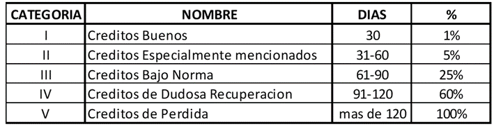

Las cuentas por cobrar son catalogadas desde el punto de vista contable como activos financieros ya que estos nacen de la venta de bienes y servicios al crédito de corto plazo situación que da nacimiento a una cuenta por cobrar y este valor siempre es el valor de la factura sin descontar.
Es uno de los activos más importantes, ya que es el activo más líquido después del efectivo en una entidad de carácter económico. Puede originarse de diferentes maneras, pero en todas las empresas o entidades económicas crea un derecho en el que le exige al tercero el pago de la misma.
Las cuentas por cobrar nacen cuando se realizan transacciones comerciales en donde el vendedor presta el servicio o transfiere el bien al momento de la transacción y el pago lo recibe en fechas posteriores, las características de esta operación comercial son:
Este tipo de relación comercial es muy utilizado entra la relación compradores y vendedores, normalmente desde el punto de vista del cliente, esta es una herramienta de apalancamiento ya que es capital fresco a cero costo de intereses para financiar su operatividad normal, mientras que desde el punto de vista del vendedor sirve como una herramienta para incrementar sus ventas y establecer relaciones comerciales duraderas con sus clientes y de esta forma garantizar el sostenimiento y crecimiento de los ingresos.
Otro aspecto muy importante en las cuentas por cobrar que está en bastante auge a raíz de las constantes crisis económicas mundiales son las herramientas que ofrece el sistema financiero para las recuperaciones de las cuentas por cobrar y el financiamiento de estas carteras de crédito.
Desde el punto de vista del control, cada cliente que forma parte de la cartera de clientes, debe documentarse en forma adecuada, para ello cada entidad establece sus políticas de crédito que le exigen tanto a sus clientes como a su personal para garantizar la recuperación del efectivo invertido en este rubro. Los clientes también deben clasificarse de acuerdo a una calificación basada en el monto de crédito otorgado y su récord de pago.
En cuanto a la información que se rinde a la gerencia y los interesados de la información financiera, las cuentas por cobrar merecen revelación por separado en los siguientes aspectos:
Los métodos para realizar la estimación de las cuentas incobrables son:
La decisión de que método utilizar depende mucho del rubro en que la empresa se desempeña, por ejemplo:
Método fiscal: es utilizado para todo tipo de empresas que no tienen ningún tipo de regulación como ser casas comerciales, empresas prestadoras de servicios, empresas distribuidoras de mercancías de todo tipo, normalmente como su nombre lo indica es más usado para gestionar los gastos deducibles del impuesto sobre la renta que para hacer una adecuada valoración de la incobrabilidad (también es llamado escudo fiscal).
“Los cambios en la tecnología de la comunicación crean efectos sociales, culturales, técnicos y cognitivos potenciales, cuyo nivel de efectividad depende de la naturaleza, alcance y nivel de implementación de la tecnología. Para empezar, ninguna tecnología de la comunicación borra o elimina las tecnologías anteriores, pero puede alterar la cantidad de uso de los canales previos y el poder de dominación” (Piscitelli, 2005, p. 142)
Regla de cálculo: la estimación de cuentas incobrables se determina calculado el 1% de las ventas netas al crédito del periodo sin que este valor sobre pase el 10% del saldo de las cuentas por cobrar a clientes.
Método de antigüedad de saldos: es un método basado en el cumplimiento de una política contable interna de la empresa o muchas veces por el requerimiento o cumplimiento de una norma establecida para la industria de negocio, donde compite la entidad como ser las que operan en el sistema financiero: bancos, cooperativas, prestamistas no bancarios y financieras todas legalmente establecidas.
Política de estimación de incobrabilidad

En base a la implementación de la política de crédito se debe valorar las cuantías que corren el riesgo de no ser recuperadas y con ello tener una mejor estimación del saldo de las cuentas por cobrar a recuperar.
Horngren, Harrison, Oliver (2010). Capitulo VIII. En Contabilidad. 8va. Edición, pag 480-501.
Horngren, Harrison, Oliver (2010). Capitulo VIII. En Contabilidad. 8va. Edición, pag 480-501. NIIF para PYMES. Versión más actual.
Universidad Nacional Autónoma de Honduras
Vicerrectoría Académica
Dirección del Sistema de Estudios de Posgrados
Dirección de Innovación Educativa
Entidad Desarrolladora del curso de “Contabilidad General”
Dr. Armando Euceda
Director DSEP
Dra. Martha Leticia Quintanilla
Directora DIE
MAE Olman Herrera
Expertos en contenidos
DSEP
Diseñador Instruccional
Carlos José Pérez Sánchez
Programador Web